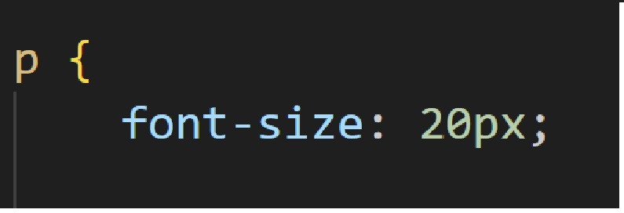
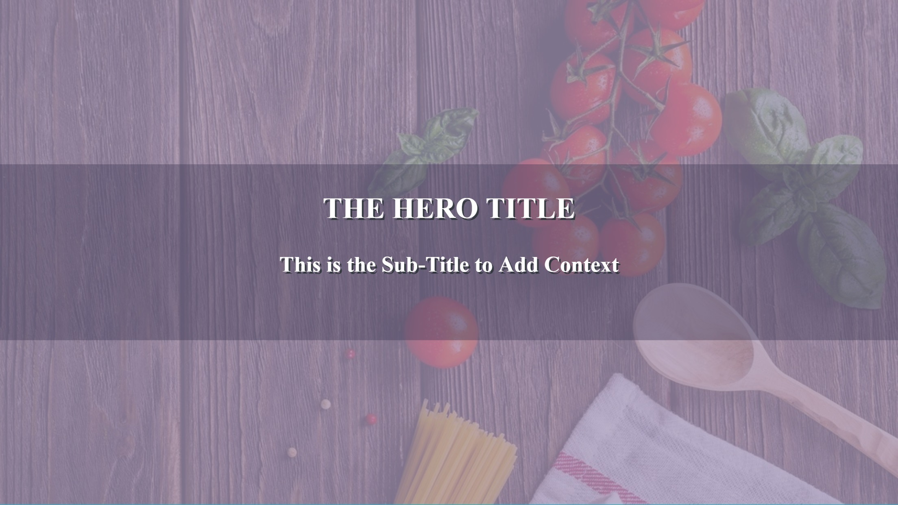

Font family refers to technical term typeface. Font family are typically used to change the typeface of texts on your websites. Most fonts are supported across most browsers and operating systems.
Font sizes are typically used to change the size of texts in webpage.
In this example the font size for the paragraphs are set to 20px.
Font weights are used to control how bold or thin the texts will apprear on web page

If texts needs to be aligned, they can be aligned through the text align property. The texts can be aligned like in word doc e.g. left, right, centre and justify

In the image above the heading will be aligned to center
There are 2 distinctions about color: Foreground and background. Both can affect the design in webpage.
Foreground color is the color that appears on page e.g. heading color may appread black. Where as background color affects the background e.g. background color for heading may be yellow.

Opacity measures how transparent the element will appear. It ranges from 0 to 1 with 0 being fully invisible and 1 representing 100% visible
Background images can be used to make the background element have an image istead of using background color. Background images are usually represented using url links.

! important rule can be applied to specific declarations instead of full rules. Using this will override any style no matter how specific it is. Be careful when using this rule. Once ! Important is used it may be hard to override it.